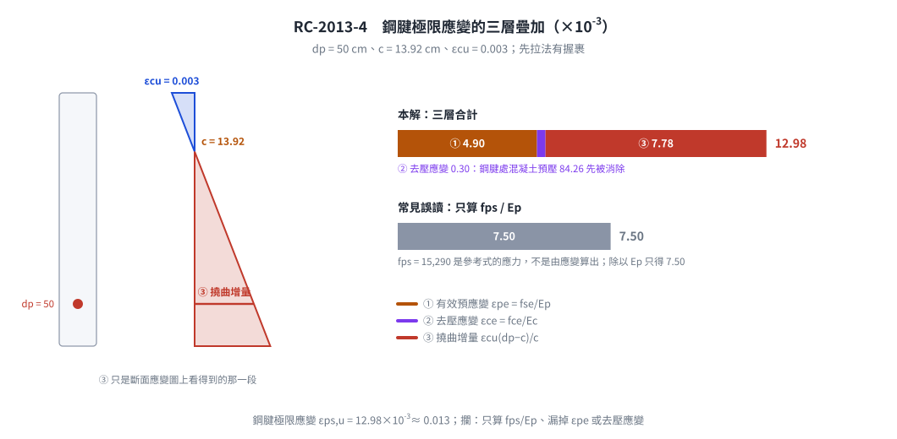

📄 題目正本：考卷原文・附圖・判讀清單（已確認）
RC-2013-4 題目正本
本檔只記錄考卷上寫了什麼、圖上畫了什麼，不含任何解法。解析見同資料夾
RC-2013-4.md。
判讀清單已經使用者確認（凍結）；本檔原則上不再修改（改動須回考卷原圖並記 log）。
| 項目 | 內容 |
|---|---|
| 考卷 | raw/exams/RC-2013_鋼筋混凝土設計與預力.pdf 第 2 頁（背面），第四題；作答規範見第 1 頁 |
| 考年 | 民國 102 年（2013） |
| 配分 | 20 分 |
| 附圖 | 無（本題無附圖） |
| 判讀狀態 | 已確認（2026-11-14 使用者確認；轉錄 2026-11-14；PyMuPDF 110 dpi 目視＋抽出文字核對；盲讀後才比對既有解析） |
1. 考卷原文（逐字）
四、一先拉預力梁，斷面 b=30 cm，h=60cm，鋼腱偏心距 e=20 cm，有效預力 $F_e$=65 tf，混凝土強度 $f'_c$=350 kgf/cm²，$f_{pu}$=17100 kgf/cm²，$A_{ps}$=6.5 cm²，鋼腱彈性模數 $E_s$=2.04×10⁶ kgf/cm²，試求開裂彎矩與鋼腱極限應變。（20 分）
參考公式：$f_{ps} = f_{pu}\left(1 - 0.5\rho_p \times \dfrac{f_{pu}}{f'_c}\right)$
2. 考卷給的公式、附表與參數
- 題文數值：$b=30$、$h=60$ cm；$e=20$ cm；$F_e=65$ tf；$f'_c=350$；$f_{pu}=17{,}100$；$A_{ps}=6.5$ cm²；鋼腱 $E_s=2.04\times10^6$ kgf/cm²。
- 參考公式：$f_{ps}$ 近似式（係數 0.5 已代入 $\gamma_p/\beta_1$），照錄如上。
- 第 1 頁作答規範：「依據與作答規範：內政部營建署『混凝土結構設計規範』（內政部 100.6.9 臺內營字第 1000801914 號令；中國土木水利學會『混凝土工程設計規範』（土木 401-100）。未依上述規範作答，不予計分。」
- 沒有給：$f_r$、$E_c$、$f_{py}$、混凝土極限應變、鋼腱的應力-應變曲線、自重或跨度。
- 卷首注意事項：可以使用電子計算器。不必抄題，作答時請將試題題號及答案依照順序寫在試卷上，於本試題上作答者，不予計分。本試題之相關公式、物理常數、符號意義及設計參數未提及時，請自行合理推斷與假設。
3. 附圖
本題無附圖。
4. 判讀清單
「把握」標不確定者請優先確認；解讀類項目（題目用字的意思）另標「解讀」。
| # | 項目 | 判讀 | 圖上／題文依據 | 把握 |
|---|---|---|---|---|
| 1 | 鋼腱深度 | 偏心距由斷面形心（$h/2=30$）往下量 → $d_p = 30+20 = 50$ cm | 題文只給 $e$；矩形斷面形心在半深 | 確定（解讀） |
| 2 | 握裹 | 先拉法 → 有握裹 | 題文「先拉預力梁」 | 確定 |
| 3 | 有效預力 | $F_e = 65$ tf 為總力；$f_{se} = F_e/A_{ps}$ | 題文大寫 $F_e$、單位 tf | 確定 |
| 4 | 「鋼腱極限應變」 | 解讀為斷面達標稱彎矩強度時鋼腱的總應變（有效預應變＋除壓應變＋彎曲增量）；考卷未定義 | 題文 | 確定（解讀） |
| 5 | 「鋼腱彈性模數 $E_s$」 | 考卷以 $E_s$ 符號表示鋼腱彈性模數 | 題文「鋼腱彈性模數 $E_s$」 | 確定 |
| 6 | 考卷沒有給 | $f_r$、$E_c$、$f_{py}$、$\varepsilon_{cu}$、鋼腱應力-應變曲線 | 全題 | 確定（作答須自行假設） |
轉錄：2026-11-14（RC-U4-1 題目正本推廣・批 1）
確認：2026-11-14 使用者確認（RC-U4-1 題目正本推廣・批 1，關卡一）
考題編號：RC-2013-4
主分類： RC-U4-1 預力梁斷面應力分析
副分類： （無）
設計法： 混合（WSD 開裂彎矩 + USD 極限應變）
標籤： 先拉法 有黏結腱 開裂彎矩 鋼腱極限應變 fps公式 矩形斷面 Whitney應力塊 β₁折減 應變相容
1. 題目（考卷原文見題目正本）
考卷原文、公式／附表、附圖與判讀清單（已確認）見
RC-2013-4-problem.md。本節只列解題時最容易讀錯的地方與本解使用的記號；題意以題目正本為準。
常見誤讀
| 項目 | 正確判讀 | 常見誤讀 |
|---|---|---|
| 鋼腱深度（#1） | 偏心由形心往下量 → $d_p=h/2+e=50$ cm | $d_p=h-e$ |
| 有效預力（#3） | $F_e=65$ tf 為總力，$f_{se}=F_e/A_{ps}$ | 當成應力 |
| 鋼腱極限應變（#4） | 斷面達 $M_n$ 時鋼腱總應變＝有效預應變＋除壓應變＋彎曲增量 | 只算 $f_{ps}/E_s$ |
| $E_s$ 符號（#5） | 考卷的 $E_s$ 指鋼腱彈性模數（本解記為 $E_p$） | 當成普通鋼筋 |
本解記號： $E_p=2.04\times10^6$ kgf/cm²（考卷記為 $E_s$）；參考式係數 0.5 即 $\gamma_p/\beta_1$。
自行假設（考卷未給）： $f_r=2.0\sqrt{f'_c}$、$\varepsilon_{cu}=0.003$、先拉法有握裹。
2. 考題核心精神與出題者意圖 (Core Concepts & Examiner's Intent)
核心精神：
預力梁的行為分兩階段：
- 使用階段（WSD）：有效預力提供底纖維預壓縮，須施加足夠外力矩才能使底纖維拉力達到 $f_r$ 而開裂 → 開裂彎矩
- 極限階段（USD）：斷面到達混凝土壓碎，以 Whitney 應力塊平衡，並用應變相容求鋼腱極限應變
出題者意圖：
- 測試開裂彎矩公式的建立：底纖維預壓縮 + 斷裂模數 $f_r$ 共同決定 $M_{cr}$
- 測試 $f_{ps}$ 簡化公式的運用（ACI 限定條件下）
- 測試極限應變的三層分解：初始預應變 $\varepsilon_{pe}$、去壓應變 $\varepsilon_{ce}$、撓曲增量 $\Delta\varepsilon_{flex}$
- 注意 $\beta_1$ 隨 $f'_c$ 降低（350 > 280 kgf/cm²）
3. 解題戰略地圖與陷阱分析 (Strategic Roadmap & Trap Analysis)
作戰計畫：
【Part 1：開裂彎矩】
Step 1：計算斷面幾何特性（A, I, Sb, St）
Step 2：計算底纖維預壓應力（Fe/A + Fe·e/Sb）
Step 3：計算斷裂模數 fr = 2√f'c
Step 4：Mcr = Sb × (預壓 + fr)
【Part 2：鋼腱極限應變】
Step 5：計算 ρp、代入 fps 公式
Step 6：計算 β1（f'c > 280 kgf/cm²）
Step 7：力平衡求中性軸深度 c
Step 8：三層應變相加 → εps,u
關鍵陷阱：
| # | 陷阱 | 應對策略 |
|---|---|---|
| 1 | β₁ 忘記折減：f'c = 350 > 280 kgf/cm²，β₁ ≠ 0.85 | β₁ = 0.85 − 0.05×(350−280)/70 = 0.80 |
| 2 | dp 混淆：e 是到重心的距離，不是到底面的距離 | dp = h/2 + e = 30 + 20 = 50 cm |
| 3 | εce 忽略：去壓應變是極限應變的一部分，不可遺漏 | εce = fce/Ec，fce 含軸壓與彎曲兩項 |
| 4 | ρp 分母用 b×h 而非 b×dp：ACI 公式中 ρp = Aps/(b·dp) | ρp = 6.5/(30×50) = 0.004333 |
3.5 變數層次分析 (Variable Hierarchy Analysis)
複習提示：第一次解題後，在每個卡住的知識點旁標記
⚠；第二次複習時只看有⚠的項目。
最終目標
求開裂彎矩 Mcr（預壓縮 + fr 決定）與鋼腱極限應變 εps,u（三層疊加）
本題關鍵公式（依計算順序）
$$\text{Step 1:}\quad A = bh,\quad I = \frac{bh^3}{12},\quad S_b = \frac{I}{y_b},\quad d_p = \frac{h}{2} + e$$
$$\text{Step 2:}\quad f_{b,\text{pre}} = \frac{F_e}{A} + \frac{F_e \cdot e}{S_b},\quad f_r = 2\sqrt{f'_c}$$
$$\text{Step 3:}\quad M_{cr} = S_b\!\left(f_{b,\text{pre}} + f_r\right)$$
$$\text{Step 4:}\quad \rho_p = \frac{A_{ps}}{b\cdot d_p},\quad f_{ps} = f_{pu}\!\left(1 - 0.5\,\rho_p\cdot\frac{f_{pu}}{f'_c}\right)$$
$$\text{Step 5:}\quad \beta_1 = 0.85 - 0.05\cdot\frac{f'_c - 280}{70},\quad c = \frac{A_{ps}\cdot \boxed{f_{ps}}}{0.85\,f'_c\,\beta_1\,b}$$
$$\text{Step 6:}\quad \varepsilon_{pe} = \frac{F_e/A_{ps}}{E_p},\quad f_{ce} = \frac{F_e}{A} + \frac{F_e\cdot e^2}{I},\quad \varepsilon_{ce} = \frac{\boxed{f_{ce}}}{E_c}$$
$$\text{Step 7:}\quad \varepsilon_{ps,u} = \varepsilon_{pe} + \varepsilon_{ce} + \varepsilon_{cu}\cdot\frac{d_p - \boxed{c}}{\boxed{c}}$$
L1：題目直接給定
| 符號 | 數值 | 說明 |
|---|---|---|
| $b$ | 30 cm | 斷面寬 |
| $h$ | 60 cm | 斷面高 |
| $e$ | 20 cm | 鋼腱偏心距（距中性軸） |
| $F_e$ | 65 tf = 65,000 kgf | 有效預力 |
| $f'_c$ | 350 kgf/cm² | 混凝土強度 |
| $f_{pu}$ | 17,100 kgf/cm² | 鋼腱抗拉強度 |
| $A_{ps}$ | 6.5 cm² | 預力鋼腱面積 |
| $E_p$ | 2.04×10⁶ kgf/cm² | 鋼腱彈性模數 |
L2：需知識點推導
Step 1：斷面幾何
| 符號 | 公式／來源 | 卡關? |
|---|---|---|
| $A$ | $30\times60=1{,}800\ \text{cm}^2$ | |
| $I$ | $30\times60^3/12=540{,}000\ \text{cm}^4$ | |
| $y_b=y_t$ | $60/2=30\ \text{cm}$（矩形對稱） | |
| $S_b=S_t$ | $540{,}000/30=18{,}000\ \text{cm}^3$ | |
| $d_p$ | $30+20=50\ \text{cm}$（鋼腱距頂纖維） |
Step 2：Part 1 開裂彎矩
| 符號 | 公式／來源 | 卡關? |
|---|---|---|
| $F_e/A$ | $65{,}000/1{,}800=36.11\ \text{kgf/cm}^2$ | |
| $F_e\cdot e/S_b$ | $65{,}000\times20/18{,}000=72.22\ \text{kgf/cm}^2$ | |
| $f_{b,\text{pre}}$ | $36.11+72.22=108.33\ \text{kgf/cm}^2$（壓） | |
| $f_r$ | $2\sqrt{350}=37.42\ \text{kgf/cm}^2$ | |
| $M_{cr}$ | $(108.33+37.42)\times18{,}000=2{,}623{,}500\ \text{kgf·cm}=26.24\ \text{tf·m}$ |
Step 3：Part 2 fps & β₁
| 符號 | 公式／來源 | 卡關? |
|---|---|---|
| $\rho_p$ | $6.5/(30\times50)=0.004333$ | |
| $0.5\rho_p f_{pu}/f'_c$ | $0.5\times0.004333\times17{,}100/350=0.1059$ | |
| $f_{ps}$ | $17{,}100\times(1-0.1059)=15{,}290\ \text{kgf/cm}^2$ | |
| $\beta_1$ | $0.85-0.05\times(350-280)/70=0.80$ | |
| $c$ | $6.5\times15{,}290/(0.85\times350\times0.80\times30)=13.92\ \text{cm}$ |
Step 4：極限應變三層
| 符號 | 公式／來源 | 卡關? |
|---|---|---|
| $f_e = F_e/A_{ps}$ | $65{,}000/6.5=10{,}000\ \text{kgf/cm}^2$ | |
| $\varepsilon_{pe}$ | $10{,}000/(2.04\times10^6)=4.902\times10^{-3}$ | |
| $E_c$ | $15{,}000\sqrt{350}=280{,}624\ \text{kgf/cm}^2$ | |
| $f_{ce}$ | $36.11+65{,}000\times400/540{,}000=36.11+48.15=84.26\ \text{kgf/cm}^2$ | |
| $\varepsilon_{ce}$ | $84.26/280{,}624=3.00\times10^{-4}$ | |
| $\Delta\varepsilon_{flex}$ | $0.003\times(50-13.92)/13.92=7.776\times10^{-3}$ | |
| $\varepsilon_{ps,u}$ | $4.902\times10^{-3}+0.300\times10^{-3}+7.776\times10^{-3}=12.98\times10^{-3}$ |
L3：深層知識（不懂就卡住）
| 知識點 | 說明 | 卡關? |
|---|---|---|
| 底纖維預壓縮兩項 | $F_e/A$（均壓）+ $F_e\cdot e/S_b$（偏心彎矩）共同決定預壓縮量，缺一不可 | |
| β₁ 隨 f'c 遞減 | 規範：$f'_c>280$ kgf/cm² 時每增加 70 kgf/cm² 降低 0.05；350 kgf/cm² 恰好降 0.05→ β₁=0.80 | |
| 三層應變疊加 | ①初始預應變 $\varepsilon_{pe}$（張拉時儲存）②去壓應變 $\varepsilon_{ce}$（消除混凝土預壓縮才能拉伸鋼腱）③撓曲增量（平截面假設，比例於 $(d_p-c)/c$） | |
| fce 的計算方式 | 鋼腱位置的混凝土應力 = 軸壓分量 + 偏心彎曲分量，即 $F_e/A + F_e\cdot e^2/I$（$e$ 是重心到鋼腱的距離，也是力矩臂，故力矩 = $F_e\cdot e$，在鋼腱處的應力 = $F_e\cdot e\cdot e/I = F_e\cdot e^2/I$） |
4. 步驟化詳細計算過程 (Step-by-Step Detailed Calculation)
▌ Part 1：開裂彎矩 $M_{cr}$
Step 1：斷面幾何特性
$$A = b \times h = 30 \times 60 = \boxed{1{,}800\ \text{cm}^2}$$
$$I = \frac{bh^3}{12} = \frac{30 \times 60^3}{12} = \boxed{540{,}000\ \text{cm}^4}$$
$$y_b = y_t = \frac{h}{2} = 30\ \text{cm} \qquad S_b = S_t = \frac{I}{y_b} = \frac{540{,}000}{30} = \boxed{18{,}000\ \text{cm}^3}$$
$$d_p = \frac{h}{2} + e = 30 + 20 = \boxed{50\ \text{cm}} \quad \text{（鋼腱距頂纖維）}$$
Step 2：底纖維有效預壓縮應力
有效預力 $F_e = 65\ \text{tf} = 65{,}000\ \text{kgf}$，鋼腱在重心下方 $e=20\ \text{cm}$，
底纖維同時受軸壓與偏心彎矩壓縮：
$$f_{b,\text{pre}} = \frac{F_e}{A} + \frac{F_e \cdot e}{S_b} = \frac{65{,}000}{1{,}800} + \frac{65{,}000 \times 20}{18{,}000} = 36.11 + 72.22 = \boxed{108.33\ \text{kgf/cm}^2 \text{（壓）}}$$
Step 3：混凝土斷裂模數
$$f_r = 2\sqrt{f'_c} = 2\sqrt{350} = 2 \times 18.708 = \boxed{37.42\ \text{kgf/cm}^2}$$
Step 4：開裂彎矩
開裂條件：外力矩在底纖維產生拉應力 = 預壓縮 + $f_r$
$$\frac{M_{cr}}{S_b} = f_{b,\text{pre}} + f_r = 108.33 + 37.42 = 145.75\ \text{kgf/cm}^2$$
$$M_{cr} = 145.75 \times 18{,}000 = 2{,}623{,}500\ \text{kgf·cm} = \boxed{26.24\ \text{tf·m}}$$
▌ Part 2：鋼腱極限應變 $\varepsilon_{ps,u}$
Step 5：計算 $f_{ps}$（極限鋼腱應力）
$$\rho_p = \frac{A_{ps}}{b \cdot d_p} = \frac{6.5}{30 \times 50} = \frac{6.5}{1{,}500} = 0.004333$$
$$0.5\,\rho_p \cdot \frac{f_{pu}}{f'_c} = 0.5 \times 0.004333 \times \frac{17{,}100}{350} = 0.5 \times 0.004333 \times 48.857 = 0.10586$$
$$f_{ps} = 17{,}100 \times (1 - 0.10586) = 17{,}100 \times 0.89414 = \boxed{15{,}290\ \text{kgf/cm}^2}$$
Step 6：確定 $\beta_1$（$f'_c = 350\ \text{kgf/cm}^2 > 280$）
$$\beta_1 = 0.85 - 0.05 \times \frac{350 - 280}{70} = 0.85 - 0.05 \times 1.0 = \boxed{0.80}$$
Step 7：力平衡求中性軸深度 $c$
$$C_c = 0.85\,f'_c \cdot \beta_1 \cdot c \cdot b = 0.85 \times 350 \times 0.80 \times c \times 30 = 7{,}140\,c \ (\text{kgf})$$
$$T_{ps} = A_{ps} \cdot f_{ps} = 6.5 \times 15{,}290 = 99{,}385\ \text{kgf}$$
$$7{,}140\,c = 99{,}385 \implies c = \frac{99{,}385}{7{,}140} = \boxed{13.92\ \text{cm}}$$
$$a = \beta_1 \cdot c = 0.80 \times 13.92 = 11.14\ \text{cm}$$
延性檢核：$\varepsilon_t = 0.003 \times (50 - 13.92)/13.92 = 0.00778 > 0.005$ → 拉力控制 ✓
Step 8：鋼腱極限應變（三層疊加）
① 初始預應變 $\varepsilon_{pe}$（張拉時儲存在鋼腱中的應變）
$$f_e = \frac{F_e}{A_{ps}} = \frac{65{,}000}{6.5} = 10{,}000\ \text{kgf/cm}^2$$
$$\varepsilon_{pe} = \frac{f_e}{E_p} = \frac{10{,}000}{2.04 \times 10^6} = 4.902 \times 10^{-3}$$
② 去壓應變 $\varepsilon_{ce}$（消除鋼腱處混凝土預壓縮，鋼腱才開始伸長）
$$E_c = 15{,}000\sqrt{f'_c} = 15{,}000\sqrt{350} = 280{,}624\ \text{kgf/cm}^2$$
鋼腱位置的混凝土壓應力（軸壓 + 偏心彎矩，取 $e$ 距離）：
$$f_{ce} = \frac{F_e}{A} + \frac{F_e \cdot e^2}{I} = \frac{65{,}000}{1{,}800} + \frac{65{,}000 \times 20^2}{540{,}000} = 36.11 + 48.15 = 84.26\ \text{kgf/cm}^2$$
$$\varepsilon_{ce} = \frac{f_{ce}}{E_c} = \frac{84.26}{280{,}624} = 3.002 \times 10^{-4}$$
③ 撓曲增量 $\Delta\varepsilon_{flex}$（平截面假設，與混凝土頂纖維應變成比例）
$$\Delta\varepsilon_{flex} = \varepsilon_{cu} \times \frac{d_p - c}{c} = 0.003 \times \frac{50 - 13.92}{13.92} = 0.003 \times 2.593 = 7.778 \times 10^{-3}$$
三層合計：
$$\varepsilon_{ps,u} = \varepsilon_{pe} + \varepsilon_{ce} + \Delta\varepsilon_{flex}$$
$$= 4.902 \times 10^{-3} + 0.300 \times 10^{-3} + 7.778 \times 10^{-3}$$
$$= \boxed{\varepsilon_{ps,u} = 12.98 \times 10^{-3} \approx 0.013}$$

圖 1 鋼腱極限應變的三層疊加。斷面應變圖上只看得到第 ③ 層——這張圖攔的是只算 $f_{ps}/E_p$（7.50×10⁻³），或漏掉有效預應變、去壓應變。
結論彙整
| 項目 | 結果 |
|---|---|
| 開裂彎矩 $M_{cr}$ | 26.24 tf·m（= 2,623,500 kgf·cm） |
| 底纖維預壓縮 | 108.33 kgf/cm² |
| 斷裂模數 $f_r$ | 37.42 kgf/cm² |
| 極限鋼腱應力 $f_{ps}$ | 15,290 kgf/cm² |
| 中性軸深度 $c$ | 13.92 cm |
| 初始預應變 $\varepsilon_{pe}$ | 4.902×10⁻³ |
| 去壓應變 $\varepsilon_{ce}$ | 0.300×10⁻³ |
| 撓曲增量 $\Delta\varepsilon_{flex}$ | 7.778×10⁻³ |
| 鋼腱極限應變 $\varepsilon_{ps,u}$ | 0.013（12.98×10⁻³） |
5. 關鍵爭議點與進階探討 (Critical Issues & Advanced Discussion)
① $f_{ps}$ 公式的適用條件
給定公式 $f_{ps}=f_{pu}(1-0.5\rho_p f_{pu}/f'_c)$ 是 ACI 318 對有黏結（bonded）先拉或後拉梁的簡化公式，需滿足：
- 無受壓鋼筋（或受壓鋼筋量極少）
- 鋼腱滿足最低延性要求
若同時有普通鋼筋，分母需加入 $\omega/\omega_p$ 項（混合配筋公式）。
② 三層應變疊加的物理意義
| 層 | 何時發生 | 物理本質 |
|---|---|---|
| $\varepsilon_{pe}$ | 施拉時 | 鋼腱本身儲存的彈性應變，梁自重加上也不消失 |
| $\varepsilon_{ce}$ | 外力矩增加到使鋼腱處混凝土應變歸零 | 必須「消耗」這段行程才能讓鋼腱額外伸長 |
| $\Delta\varepsilon_{flex}$ | 超過去壓後直到極限破壞 | 平截面假設：頂纖維達 εcu=0.003 時，鋼腱的比例伸長 |
③ $\varepsilon_{ps,u}$ 驗算
$\varepsilon_{ps,u} = 0.013$，換算對應應力：$0.013 \times 2.04\times10^6 = 26{,}520\ \text{kgf/cm}^2 \gg f_{pu}$
這表明鋼腱已超過彈性範圍進入非線性段，而非線性應力應變曲線在高應變時應力低於
彈性外插值。$f_{ps} = 15{,}290\ \text{kgf/cm}^2 < f_{pu} = 17{,}100\ \text{kgf/cm}^2$，正好落在鋼腱的非線性硬化區，物理上合理。
④ 考場快速估算 $M_{cr}$
$$M_{cr} \approx \frac{F_e\cdot S_b}{A} + F_e\cdot e + f_r\cdot S_b = \underbrace{F_e\!\left(\frac{S_b}{A}+e\right)}_{\text{預力項}} + \underbrace{f_r\cdot S_b}_{\text{開裂項}}$$
對矩形梁：$S_b/A = I/(A\cdot y_b) = (bh^3/12)/(bh\cdot h/2) = h/6$，故
$$M_{cr} = F_e\!\left(\frac{h}{6}+e\right) + f_r\cdot S_b = 65{,}000\times(10+20) + 37.42\times18{,}000 = 1{,}950{,}000 + 673{,}560 = 2{,}623{,}560\ \text{kgf·cm} ✓$$
修正日期：2026-11-14（§1 改為指向題目正本（本題無附圖））
圖解補繪：2026-11-14（向量圖 1 張 figs/RC-2013-4-fig-1-strain.svg，腳本 gen_RC-2013-4.py，可重跑；腳本檔尾對 §4／§5 公佈值做 assert）